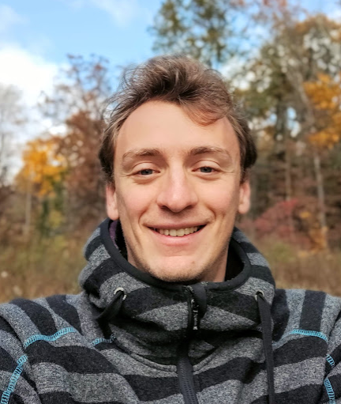

-

Post-Doc at KAUST
-
Elastic anisotropy, regularizations and deep learning in application to seismic inverse problems are my primary areas of interest. Since mid 2018 Oleg Ovcharenko and I are also working on a medical imaging startup MedSeis.
News
Scattering Atlas is published in JGR: Solid Earth
Scattering radiation patterns have been used for decades to guide multiparameter seismic inversions. Tariq Alkhalifah and I present an ultimate collection of radiation patterns mapped into the spectral domain. Resolution for each elastic parameter that might be of interest to invert for is predicted theoretically.
What anisotropic elastic properties can body waves resolve? Vladimir Kazei & Tariq Alkhalifah, 2019 Journal of Geophysical Research - Solid EarthRegularized FWI with automated salt-flooding is accepted to Geophysics
We altered the total variation and hinge loss regularizations to make seismic inversion for salt-affected regions easier to implement and execute. Mahesh Kalita managed to invert for a salt body in Gulf of Mexico with limited offset and lack of low frequencies.